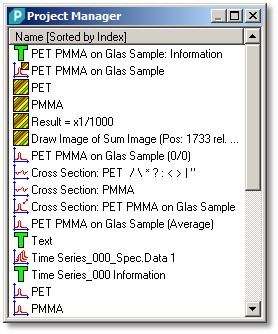

|
项目管理器概述
|

描述
项目管理器显示所有测量数据对象以及所执行分析的结果。它也是最适合组织、可视化或分析测量数据的工具。
项目管理器在启动程序时自动创建。可以使用主菜单"添加 > 项目管理器"添加另一个项目管理器窗口。
功能
您还可以通过以下方式显示或隐藏数据类别、更改排序模式或启动数据分析：
要更改默认行为，也请查看
您也可以查看上下文菜单：
数据可视化
要可视化数据对象，双击它或选择一个或多个对象并按回车键。
更多信息请参阅数据可视化。
数据分析
数据分析通过所谓的拖放操作对话框执行：您可以将一个或多个选定的数据对象从项目管理器拖放到拖放操作按钮上。或者通过环形菜单"操作"启动分析。
更多信息请参阅数据分析概述。
数据对象
要了解更多关于不同类型数据对象的信息，请参阅数据对象概述。